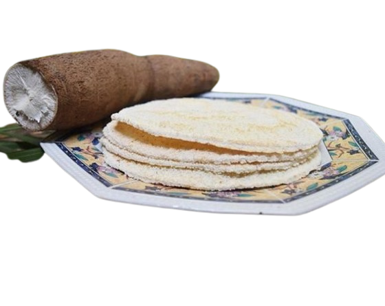

GUAINÍA
Ubicado en el sureste de Colombia, Guainía es un departamento caracterizado por su riqueza natural
y cultural. Con una población estimada en aproximadamente 50,000 habitantes y una extensión territorial
de 72,238 km², es una de las regiones menos pobladas del país. Su capital es Inírida, y su geografía
está dominada por la selva amazónica, ríos majestuosos y tepuyes imponentes.
Guainía es hogar de diversas comunidades indígenas que preservan sus tradiciones y formas de vida,
contribuyendo a la identidad cultural del territorio.
GASTRONOMÍA
Casabe
Pan elaborado a base de yuca amarga, muy común en la dieta de las comunidades indígenas.

Pescado Moqueado
Pescado ahumado con técnicas ancestrales indígenas, servido con fariña y otras guarniciones locales.

SECTORES ECONÓMICOS

Agricultura: Producción de yuca, plátano y productos amazónicos como el arazá y el copoazú.
Pesca: Actividad fundamental para la economía local, especialmente en los ríos Inírida y Guaviare.
Minería: Extracción de oro y coltán, aunque con regulaciones ambientales estrictas.
Turismo: Atractivos naturales como los Cerros de Mavicure y la biodiversidad de la Amazonía.
ZONAS TURÍSTICAS
Guainía ofrece paisajes únicos y cultura ancestral, destacando:
Guainía es un destino de aventura y biodiversidad, ideal para los amantes de la naturaleza.